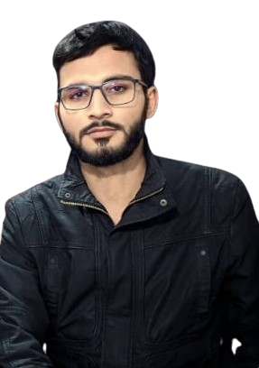

My Name is Abuzar RaziQ,
I'm Learning MERN STACK Development From
Saylani Mass IT Training

About me
Greetings! 🌟 My journey in education began at Government College
Peshawar, where I proudly completed my FSC Pre-medical studies. However,
my thirst for knowledge and passion for innovation led me down an
exciting path towards the captivating world of web development.
Currently, I am honing my skills at the esteemed Saylani Institute
Peshawar, where every line of code I learn feels like a stroke of
creativity on a blank canvas. With each passing day, I embrace the
challenges and opportunities this field presents, driven by a relentless
desire to craft digital experiences that resonate and inspire. Join me
on this exhilarating adventure as I transform ideas into captivating
online realities.